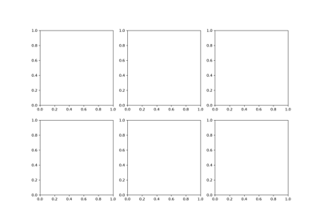
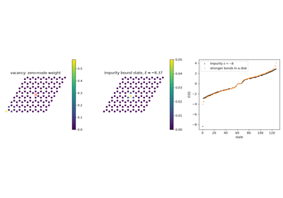

Tight-Binding#
The generic real-space and reciprocal-space machinery: the square
lattice, whose single band is simple enough to check by hand, as the
smallest complete illustration of Bloch’s theorem; a graphene flake
diagonalized directly and its Bloch band structure along a k-path,
including Wallace’s 1947 linear (Dirac) dispersion near the K point;
the physics behind the 2004 isolation of graphene – flakes, edge
states, and the Berry phase of pi of its Dirac cones; and
tbkit.plot.Plot’s lattice, spectrum, density-of-states, and
eigenstate-intensity plots.

Building Finite Lattices: Unit Cells, Cuts, and Lattice Arithmetic

Defects and Impurities in a Graphene Flake: Vacancy Zero Modes and Bound States

Graphene: Real-Space Flake and Reciprocal-Space Bands

The Isolation of Graphene: Flakes, Edges, and a Berry Phase of pi

The Square Lattice: Bloch’s Theorem in its Simplest Form